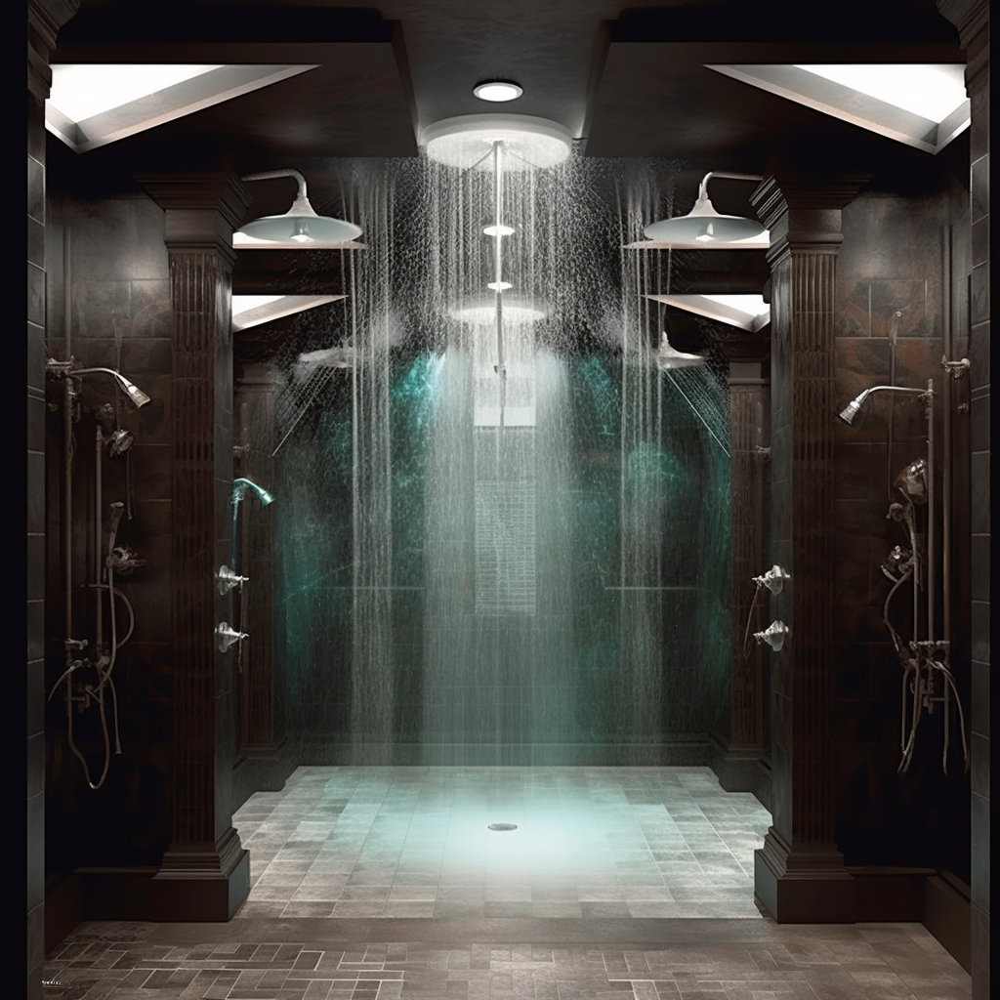

The overarching idea is to enhance the lives of architects by addressing key challenges they encounter in their profession. Architects often grapple with muscle fatigue from prolonged mouse usage, the need to efficiently manage construction waste, and the limitations of inflexible 3D printers. It was proposed innovative solutions involving virtual reality and gesture-based interfaces for design, a Construction Waste Recycling App for sustainability, and a revolutionary 3D printing enhancement with real-time adaptability. These advancements aim to streamline architectural work processes, reduce environmental impact, and push the boundaries of creative possibilities in architectural design.
Multi-head 3D printer
∪
To specifically address the issue of inflexibility in 3D printing for architectural models, the solution involves drawing an analogy with jet showers, where multiple showerheads release water simultaneously. In this context, the problem lies in the traditional 3D printing process being slow and unable to adapt to real-time changes during printing. By incorporating multiple print heads, similar to the multiple showerheads in a jet shower, architects can expedite the printing process and enhance precision.
Experience Journey
As an architect, you enthusiastically engage in a competition aimed at designing a local primary school for the coming generations. After devoting six weeks of intensive effort to the project, you confront an internal deadline to submit the digital model for 3D printing. Once the submission is done, you realize a crucial modification that could significantly enhance your design. Fortunately, a newly acquired rapid 3D printer is capable of accommodating this last-minute change. The printer's multiple robotic arms efficiently facilitate the production of the updated model, enabling you to meet the deadline. This technological advancement fills you with elation, underscoring your success in crafting a school that holds the potential to shape the minds of future generations.
Solution
The multi-head 3D printer, inspired by jet shower efficiency, tackles the slow and inflexible nature of architectural model printing. With multiple heads and specialized software, it allows real-time adjustments, material switches, and boosts speed and precision, revolutionizing the field.
Relevance and Impact
This 3D printer for architectural model printing offers significant relevance and impact by addressing the challenges architects face in rapidly iterating and revising their designs for competitions. It provides short-term benefits of reduced production times and increased flexibility, fostering a culture of creativity and innovation in the mid-term, and potentially streamlining urban planning and the construction industry in the long term. However, we recognize the need to address resource consumption and technical issues to minimize environmental impacts and ensure a seamless user experience.